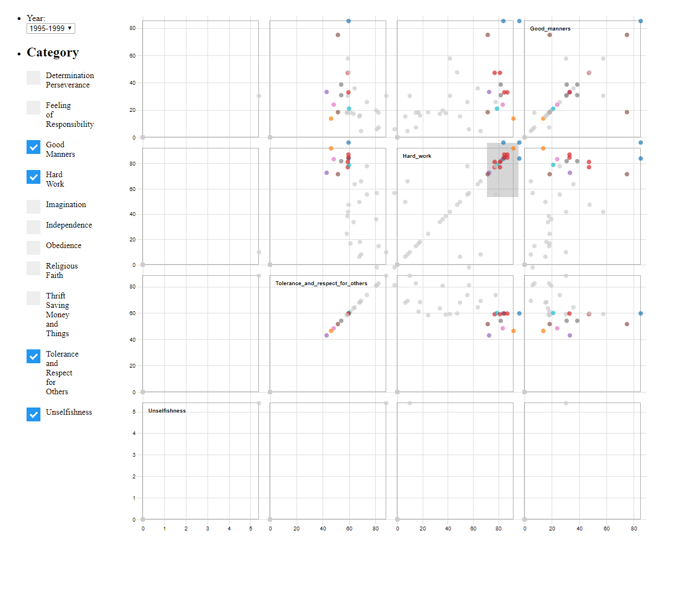
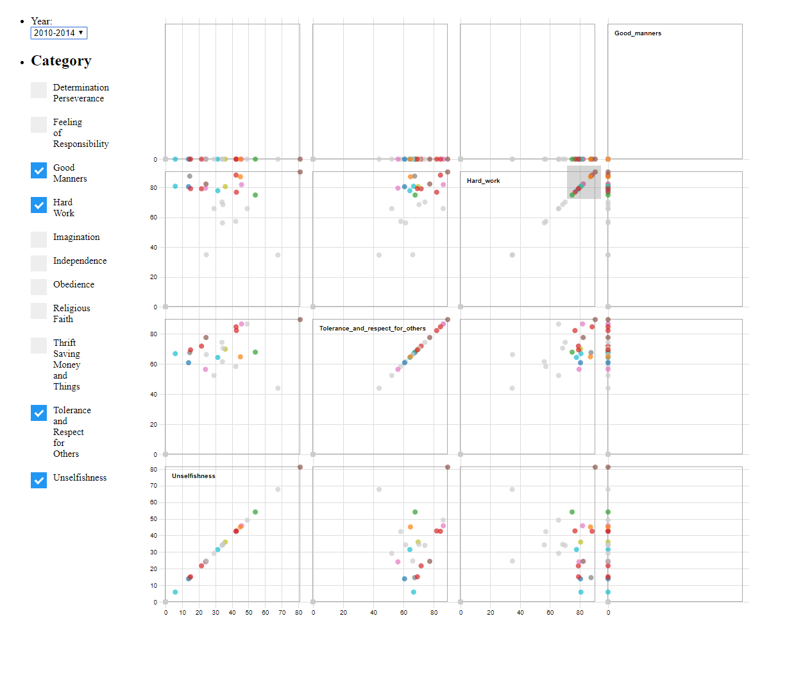
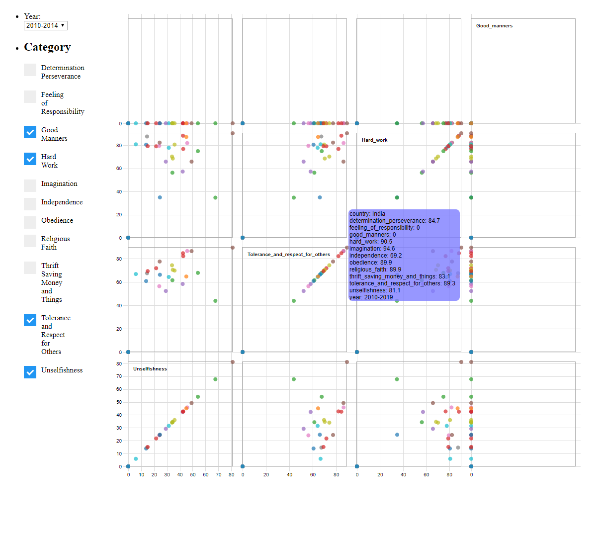
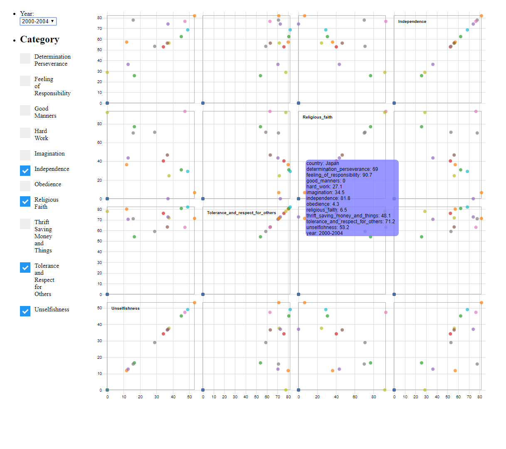

Topic
Important child qualities
42 Countries
11 Categories
During the period 1995-2014 (20 years)
Instructions
Project
To use the Visualization Press the top right button.
Select 4 categories and the scatterplot matrix will change accordingly, unselect and select a new category to change, no more than 4 can chosen at the same time.
To change the date the visualization needs 4 checkboxes selected.
Main questions
Is there any correlation between the qualities prioritized for the children hard work and tolerance for other?
How is the development of religious faith as a quality for children in Japan over the years?
Question 1

After choosing the desired categories to be displayed, we filter the highest nodes in the hardworking chart,
this allows us to see that the countries which most strongly think that the necesary quality
of a child is hard work also have strong beliefs of them also being tolerant to others
but it still consists of the bottom half of all the countries which have a higher priority
in tolerance.

If we change the data to be the most recent, we can see a change in trend, since
both qualities have a bigger correlation, meaning that more people prioritize the two qualities
in children during the latest years.

If we hover over we see that India is the country with the
highest values on the two scales. We can also see that is a country that see a lot of qualities
as very important for a child, with the lowest one being independence. From this we can grasp a bit
of the statistics of India and we could conduct studies on why some of the numbers are lower, such as
the independece, and get a better understanding on their culture and views. This is also shared with
the lowest rating country in these two categories, Haiti. Which also shares a very low priority of
independence on children.
Question 2
We want to see the development of religios faith as a quality in children over the years of
a specific country, in this case we take Japan as an example, since it has data recorded data
for every time period. We can see that Japan in 1995-1999 has prioritized very low the religious
faith in their children, even if it is not the lowest country is does not go above the 10%.

During the period of 2000-2004 the percentage of people that see religious faith as an important quality
ascends a bit over 6%.
During 2005-2009 it descends again a bit, but it still around the 6%.
Finally during 2010-2014 Japan stays within the same range for religious faith as the past years. We can conclude
that Japan has not been a country over the last 20 years that prioritize the religious faith. This can makes
us understand that it might be a country that is not very religious. From this it could be researched which religions
in japan priorities this quality for their children and if the religions are more based on faith or just traditions.
Learning
The learning outcomes from the project is not limited to the development behind it, e.g. become more used to using d3
creating interactions, filters and formating everything in real time, but also in the potential of discovery through
a visualization, with a simple brush function it is possible to highlight data and clearly see any correlation between
different categories which may not be possible due to the clutter caused by the Data. Choosing what kind of visualization
was very tricky and the posible discoveries are not clear until the interaction with the visualization is done. The limitations
due to the little experience with the technologies limited the possibility of creating something more advanced with better capabilities
of visualizing the data for easier navigation.